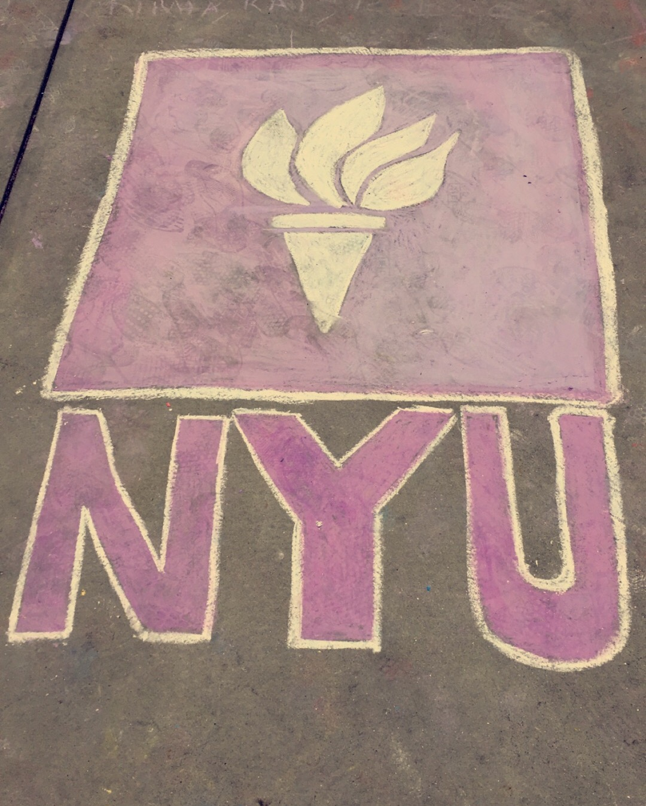

~ Through the Hapa Lens ~
Home Food College
Contact

I drew this at the end of senior year with my fellow NYU 2020 peers!

Can you tell I'm a freshman? Fun fact: I was the first student to show up at Othmer hall on Move-In Day, and my roommate was second!
My first coding project at NYU!
That day, my teacher taught us how to make a triangle, a rectangle, and a line. Then she said for homework to make a self portrait. I was mortified to say the least.

Engineering students being social?
My lovely roomie Karen et moi.
Exploring the city!
Kat LoScalzo | NYU 2020 | IDM |